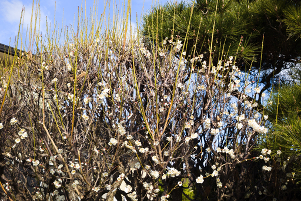

03 月 07 日 ( 金 )
久しぶりの徒歩通所
医師から運動しろと指示され始めたこともあり、病院のデイケアまで歩いて通所した。恐らく 15 年ぶりくらいになる。

途中の集落の家では梅の花が開いていた。春だ。
やはり途中の集落にある瘤の立派な大木
Gemini 2.0 Flash によると大阪府にあるドイツベルリンの「世界文化の家」だそうだ。
大阪も国際的だ。万博もあるしね。府内にドイツがすっぽり収まっていても不思議じゃないな！！
行き止まり？それでも我々は進むのであった！！そして我々はその先で驚くべきものを発見するのであった！！ < 発見しない
未舗装路が 100m ほど続く。短い。道が凸凹で普通の自転車だと乗ったまま通過は無理そう。
MTB のダウンヒルをやってる人だとなんともないかも。距離が短すぎるって不満を持たれそう。
なお左側の山手側にはときどき鹿がでます。
なにげに枝ぶりの良い木が。
道中見かけた鳥は以下の通り。
- イソヒヨドリ (やたらと見かけた)
- オオバン
- カルガモ
- カワセミ (声のみ)
- スズメ
- ハクセキレイ
- ハシブトガラス
- ヒドリガモ
- メジロ
- 雌ジョウビタキ
安威川でカワセミの声がしたので立ち止まって声の主を探したのだけど見つけられず。遅刻するかどうかギリギリだったので探鳥はそこそこに病院に向かう。遅刻すると病院の栄養科に昼食が必要と伝えることができないので遅刻するわけにいかない。
家からデイケアまでの約 6.3km をなんとか 2 時間強で歩き通せた。途中休憩しながらだけど。時間まで余裕があるように 2.5 時間を想定していたけれど結果としてギリギリだった。
到着した頃には汗だくに。デイケアは暖房が入っているのだけれど、汗冷えで一日震えて過ごすことに。
帰宅は公共交通機関を使った。
- Category :
- #日記
- #blog
- #うつ病
- #運動療法